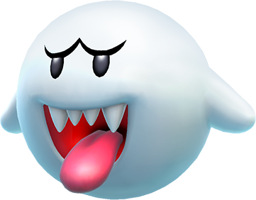

 So, you finally got to the last puzzle. Well there is a button at the bottom of the page.... but you are smart. You probably knew it isn't actually the real button. Then again, maybe you actually aren't all that smart. Regardless, i wanted to give you a clue about the whereabouts of the button. You see, ive decided to incorporate the past puzzles into 1. For example, the first puzzle's secret was that buttons would dissapear if it was the wrong one. nnow all buttons and piictures will dissapear. yOu may have realized that the "it" link didnt appear as a link, nor will this button. iiin fact iii might just play miiiind games wiiith you XD. Honestly, i do'nt knooow whhat II am aSyNig aNym0rError....Good luck!